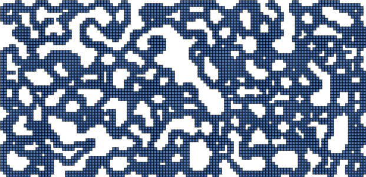

マップ生成1
実行例
 実行結果を見る
ソースコード
解説/アルゴリズム
- 二次元配列を二つ用意します。（計算用、表示用）
- 計算用の中身を、40%の確率で壁の値、60%の確率で床の値になるように埋めていきます。
- 表示用の中身をすべて壁の値で埋めておきます。
- ループ（5 回）
- 計算用のセル一つ一つを走査します。(x=2 ～幅-2, y=2 ～高さ-2)
- 自身のセルの周り 3x3, 5x5 にある 1(壁)の数を数えます。（自身のセルも含める）
- 3x3 の壁の数が 5 以上、もしくは 5x5 の壁の数が 2 以下なら、
表示用のセルを壁に、そうでなければ通路に変えます。 - 表示用の中身をすべて計算用にコピーします。
- 表示用をもとに描画を行います。
コード解説
配列の初期化
const CellType = {
Wall: "wall",
Floor: "floor",
};
type CellType = typeof CellType[keyof typeof CellType];
let map: CellType[][]; // 表示用
let temp: CellType[][]; // 計算用
for (let y = 0; y < tileHeight; y++) {
temp[y] = [];
for (let x = 0; x < tileWidth; x++) {
temp[y][x] =
p.random(1.0) < fillProbability ? CellType.Wall : CellType.Floor;
}
}
for (let y = 0; y < tileHeight; y++) {
map[y] = [];
for (let x = 0; x < tileWidth; x++) {
map[y][x] = CellType.Wall;
}
}
- 計算用の中身を、40%の確率で壁の値、60%の確率で床の値になるように埋めていきます。
- 表示用の中身をすべて壁の値で埋めておきます。
配列の捜査
for (let y = 2; y < tileHeight - 2; y++) {
for (let x = 2; x < tileWidth - 2; x++) {}
}
後に自身のセルの周りにある 5x5 のチェックがあるので、配列外にアクセスしないように最初から 2 マス内側から走査を始める形にします。
つまり、配列の外側 2 マス分はアクセスすることがありませんので、すべて壁のままになります。
壁の数を数える
for (let ty = y - 1; ty <= y + 1; ty++) {
for (let tx = x - 1; tx <= x + 1; tx++) {
if (onBoard(tx, ty) && temp[ty][tx] === CellType.Wall) {
count33++;
}
}
}
自身を含めた、周りにある 3x3 の壁の数を確認します。
for (let ty = y - 2; ty <= y + 2; ty++) {
for (let tx = x - 2; tx <= x + 2; tx++) {
if (onBoard(tx, ty) && temp[ty][tx] === CellType.Wall) {
count55++;
}
}
}
自身を含めた、周りにある 5x5 の壁の数を確認します。
if (5 <= count33 || count55 <= 2) {
map[y][x] = CellType.Wall;
} else {
map[y][x] = CellType.Floor;
}
壁の数に応じて表示用配列の中身を書き換えます。
次ループの前の準備
for (let y = 0; y < tileHeight; y++) {
for (let x = 0; x < tileWidth; x++) {
temp[y][x] = map[y][x];
}
}
次の配列の操作の前に表示用の値をすべて計算用にコピーしておきます。